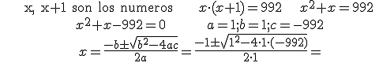
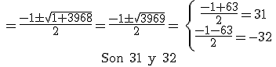
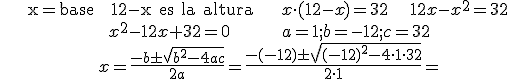
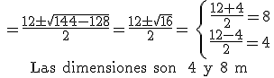

Ecuaciones
problemas
1. Calcula dos números naturales consecutivos cuyo producto sea 992


2. Calcula las dimensiones de un rectángulo que tiene un perímetro de 24 m y un área de 32 m2.


NOTA: Si a = 1, la ecuación es x2 – sx +p = 0, donde “s” es la suma de las soluciones y “p” su producto.
Ejercicios. Resuelve los siguientes problemas, comprobando las soluciones:
1.- El producto de un número aumentado 3 unidades por el propio número disminuido 4 unidades es 98. Averigua el número.
2.- Calcula el perímetro de una piscina, sabiendo que su longitud es 3/4 su ancho y su área es 12m2.
3.- Calcula la los catetos de de un triángulo rectángulo isósceles cuyo área es 50m2.
4.- Encuentra la ecuación de 2º grado cuyas soluciones son -3 y 7 y compruébalas.
Soluciones: 1) -10 o 11; 2) 14 m; 3) 10 m; 4) x2 - 4x - 21 = 0
Obra publicada con Licencia Creative Commons Reconocimiento No comercial Compartir igual 4.0